COPE - Change-Oriented Programming Environment
aims to make software changes first class citizens in the development environment
COPE ClientRecorder for Eclipse
COPE plugin can be installed using following update-site:
http://cope.eecs.oregonstate.edu/client-recorder/
If you need help with installing COPE plugin, see installation instructions below
Compatibility: COPE plugin works with Eclipse Juno (4.2) and newer versions of Eclipse IDE (Kepler 4.3, Luna 4.4)Installation instructions (step by step help)
In order to install ClientRecorder plugin, you need to perform the following actions:
- Select Help -> About Eclipse:
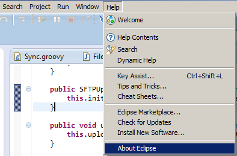 -
Check name of currently installed version. It should be Eclipse Juno (4.2) or Eclipe Kepler (4.3) or Eclipse Luna (4.4). If you have an older version, upgrade to current version of Eclipse. In order to upgrade Eclipse, you need to go to http://www.eclipse.org/downloads/ page, select latest stable release of Eclipse IDE for download and install it on your computer
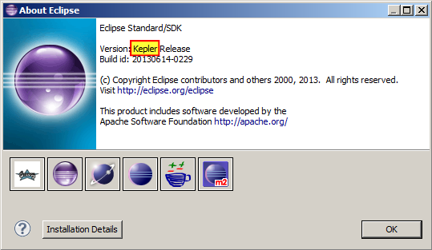 -
Go to Help -> Install New Software...
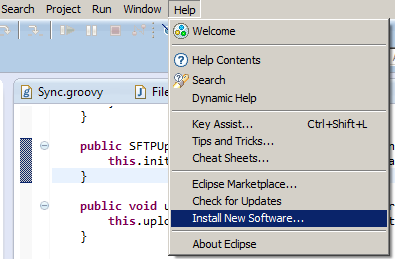 -
Installation page will appear. Press "Add" button to add new plugin repository:
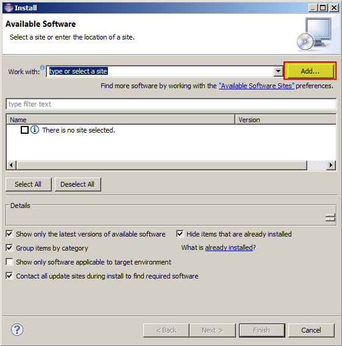 -
Type in ClientRecorder into the "Name" field. Use following URL to fill in "Location" field: http://cope.eecs.oregonstate.edu/client-recorder/
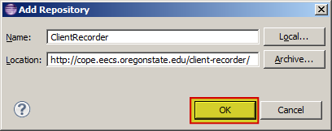 -
Select "COPE ClientRecorder" and press "Next":
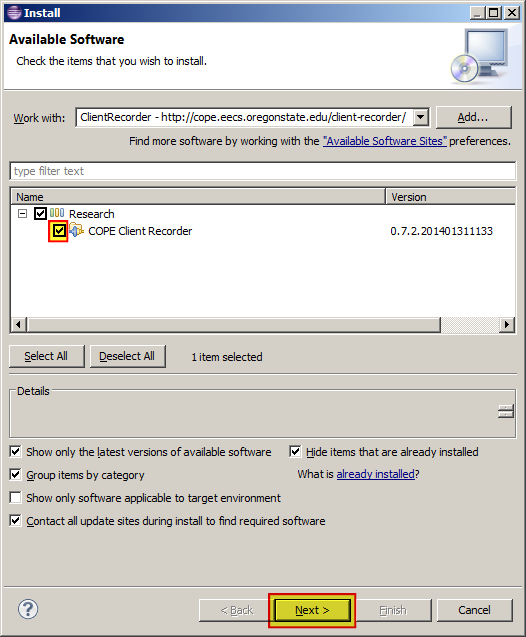 -
Press 'Next':
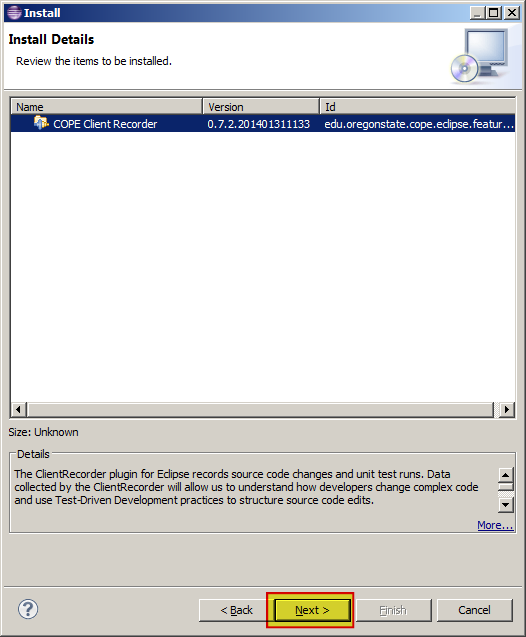 -
Select "I accept the terms of the license agreement" and press "Finish":
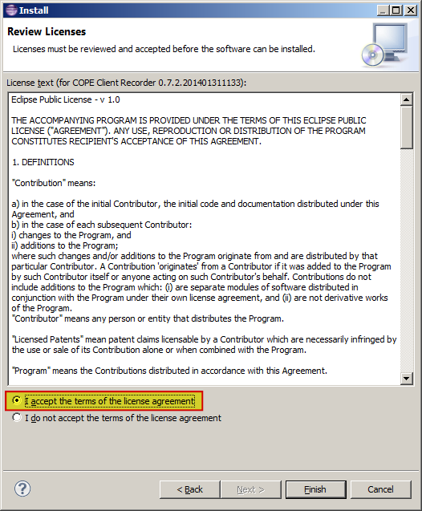 -
Restart Eclipse by pressing 'Yes':
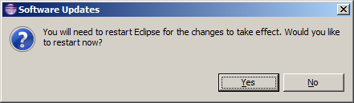
Uninstallation instructions (step by step help)
In order to uninstall ClientRecorder plugin, you need to perform the following actions:
- Select Help -> About Eclipse:
- Click 'Installation Details':
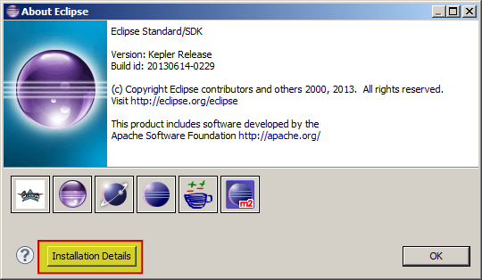 - Select COPE ClientRecorder plugin in the list and press 'Uninstall...':
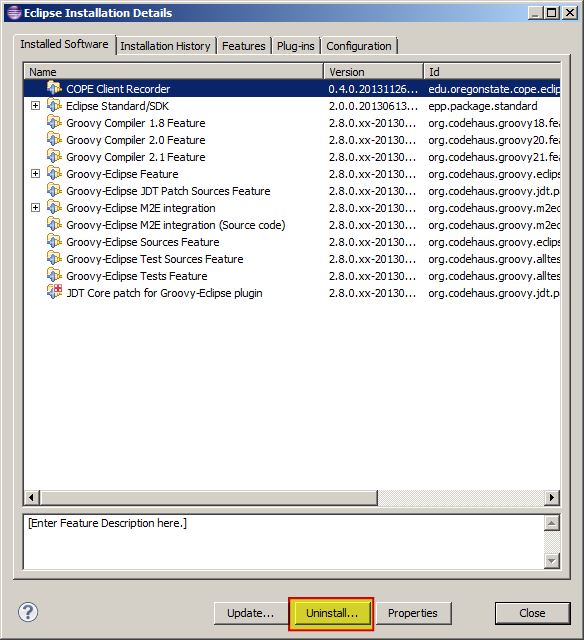 - Press 'Finish' to complete unistallation procedure:
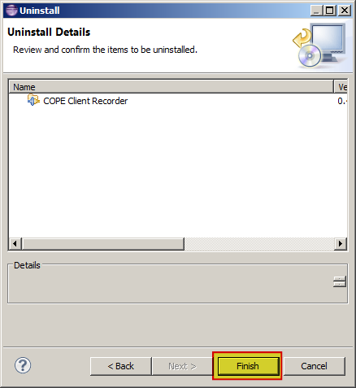 - Restart Eclipse